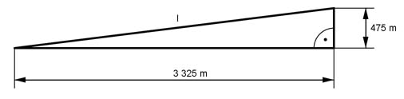

Pythagoras Aufgabe 61 Auf einer Karte, Maßstab 1 : 25 000, ist eine Zahnradbahnstrecke 13,3 cm lang. Sie überwindet auf dieser Strecke einen Höhenunterschied von 475 m. Berechnen Sie die Länge l der Bahnstrecke in m.  13,3 cm auf der Karte entsprechen 13,3 * 25 000 cm = 332 500 cm = 3 325 m in der Natur l² = 475² m² + 3 325² m² = 11 281 250 m² |√ l = 3 358,8 m